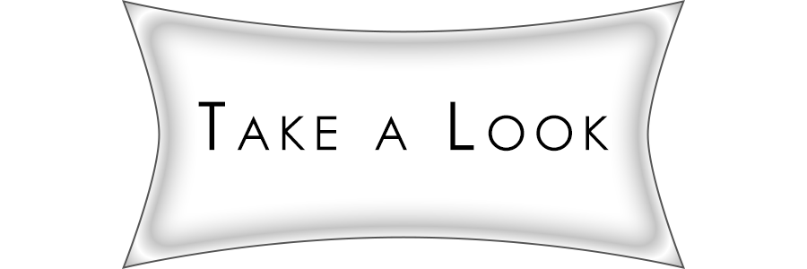

The Matterhorn | original
A project to imagine new development opportunities along the Camden, NJ, waterfront. The class developed a conceptual framework for the proposed site plan, where each student designed a set of buildings in Rhino to fit into it. We then separately rendered our own buildings, incorporating the massing of the other proposed buildings. The following images incorporate work from Rhino 6, Maxwell, Google Earth, and Adobe Photoshop.



The project focused on the impact of the extension of PATH rail to Newark Airport, especially as it concerned the adjacent Dayton neighborhood. The studio examined the character of the existing community, and proposed a potential long-term development scenario. I developed several GIS graphics for our report and presentations, detailing characteristics of the study areas; some of the maps include the wequahic neighborhood to its West.
Graduate comprehensive planning studio, focused on potential redevelopment of the Morgan neighborhood of Sayreville, NJ. We ultimately proposed a series of zoning, circulation and land use changes. I developed several GIS graphics detailing several constraints and characteristics of the study area. These analyses made it clear we had to focus our efforts around the State Highway bisecting the neighborhood.